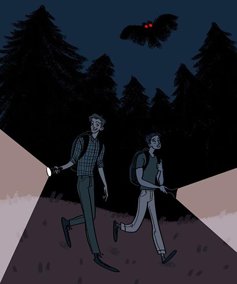

The Wendigo is a mythological cannibalistic monster. After a human has resorted to eating another out of desperation and hunger, it is here when the spirit of the Wendigo possesses the human.
Appearance
While the more common and well known characteristics of a Wendigo is a demonic like deer, the following are a more accurate description;
Sunken eyes
Sharp-yellowed fangs and claws
Spinal disfiguration, giving them a hunchback-like appearance
Slender and elongated limbs
Stretched,grey and glossy skin that resembles and acts as armour
Hunt alone, will attack one if its own kind to reduce competition for food
Can only see movement, immobile and silent creatures will not alert it
Incredible strength
Impeccable speed, can move from one location from another in the blink of an eye
Can mimic human voices
Brutal, sadistic killers
Mothman

Hikers Encounter Mothman
The Mothman is a legendary creature often described as a large humanoid creature with wings. Sightings of the creature has been linked to disasters. The most common known one being the Silver Bridge Collapse.
Appearance
Large, black or dark grey, humanoid figure
Batlike wings, with a wingspan of about 10-15 feet
Hypnotic, unsettling eyes that glow red
Long legs
Beak-like face
Characteristics
Primarily moves through the air
Witnesses describe the movement as smooth and effortless
Can reach speeds that outpace cars
Unnervingly silent, and does not generate wind or sound
While traveling on the ground, it moves in awkward, short bursts
Where Bigfoot was First Spotted
Six Rivers National Forest
Orleans, CA 95556
Toll-Free: 1-310-807-3956